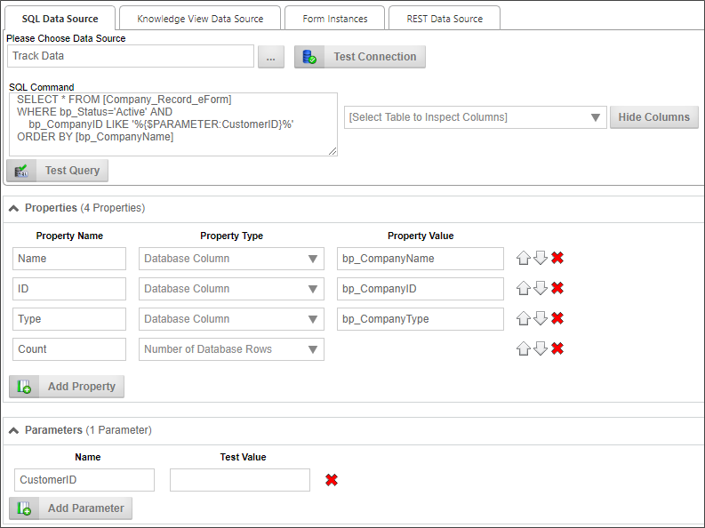
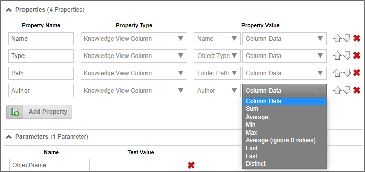
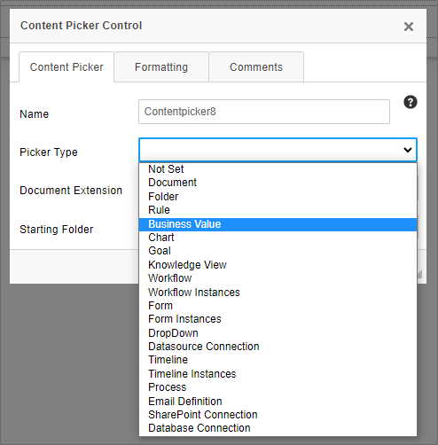
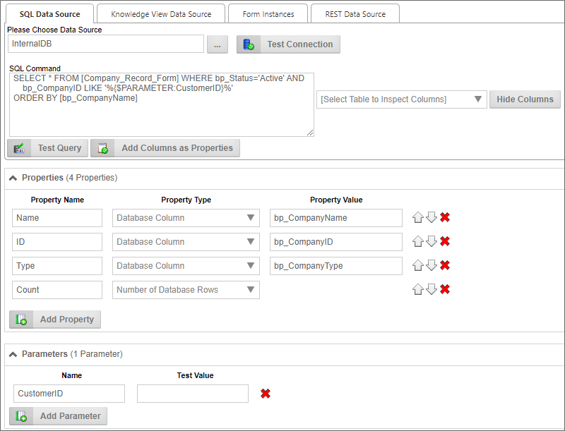

When a Business Value Property returns no data from a SQL command, it can still be used in a condition, because the value will be set to an empty string, allowing comparisons in the conditions to work correctly.
When a Business Value Property returns no data from a SQL command, it can still be used in a condition, because the value will be set to an empty string, allowing comparisons in the conditions to work correctly.
An even more powerful way of using Business Values is to use parameters to return values dynamically in your processes. Previously, instead of a Business Value, you'd need to create a Custom Task activity in your Process Timeline, or use a Custom Task in a Form, to return data values to fill fields. As a result, you might have several Custom Tasks, spread out among several applications, each of which would use the same configuration. Any change to the database schema, would require making changes to every single one of those Custom Tasks, making updates tedious and costly in terms of time and effort. While there are certainly times that a database Custom Task will still be needed, the Business Value can replace a Custom Task in nearly all use cases.
Let's take a look at a hypothetical case. We'll assume that we have a database table that stores customer information. We can create a Business Value to provide that information. Let's look at how such a Business Value might be configured.

The SQL Command for this Business Value retrieves records for active customers. If no "CustomerID" parameter is supplied, the command will simply pull every customer record. If the "CustomerID" parameter is supplied, Business Value will return only a single record. In other words, the same Business Value can return a single or scalar value based on the parameter.
Next, the Business Value uses the database columns to create three properties: the Name, ID, and Type properties will all contain values extracted from the database, In addition, since the Business Value automatically knows how many records have been returned by the SQL Command, the fourth property, Count, will contain the number of records returned.
When a Business Value Property returns no data from a SQL command, it can still be used in a condition, because the value will be set to an empty string, allowing comparisons in the conditions to work correctly.
Once we have created the Business Value, it's accessible by all other objects in Process Director. None of your business users or other implementers need to know anything about how the data is configured to use the it, because the Business Value properties are available through the Condition Builder dropdowns. They merely need to select the properties they want, which means that, in most cases, implementers no longer need to create a Custom Task to retrieve the data. They no longer need to know or care about the database schema or the SQL syntax to retrieve the data they want. This functionality greatly reduces the level of technical knowledge that business users and implementers need to conduct relatively sophisticated data retrieval operations. With Business Values, technical details about the data, and how to acquire it, is largely irrelevant to implementers. The only person who needs to have any sort of technical knowledge about the database is the creator of the Business Value itself.
Combined with the scheduling and process initiation available in the Goals feature, Process Director is a powerful process automation system, enabling automatic process initialization based on data from external systems.
Another function available for Business Values is the ability to perform mathematical operations on a Knowledge View column. When retrieving any numeric column data, Process Director can perform the following calculations on the values:

Once a Business Value has been created, it can be selected as a content type from the Content Picker control when creating Forms.

Business Values can also be accessed through a System Variable. For an example of using a system variable with a parameter, take a look at the following Business Value configuration for a notional Business Value named "CustomerInfo":

So, in this example, let's say we want to return the Name property for the customer whose Customer ID is "123" via a system variable. In that case, we could use the following syntax:
{BUSINESS_VALUE:CustomerInfo.Name, $CustomerID=123}
Please see the documentation on Business Value System Variables for more information.
Business Values: Additional capabilities of Business Values.
Creating Business Values: Instructions on Business Value configuration.